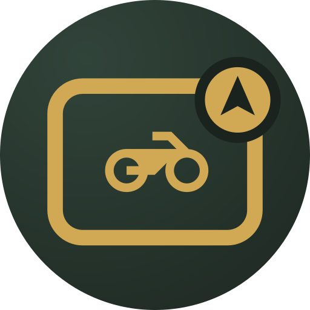
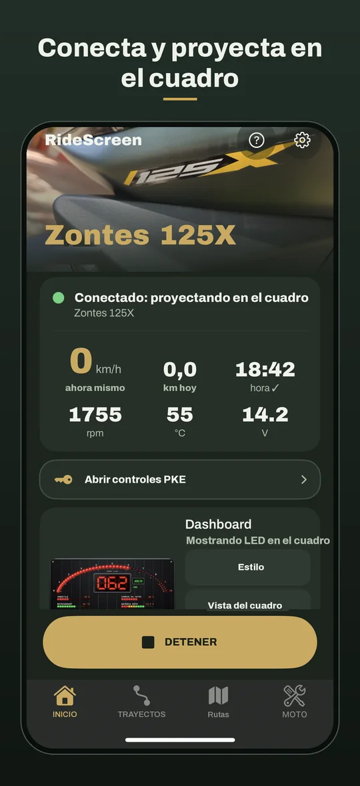
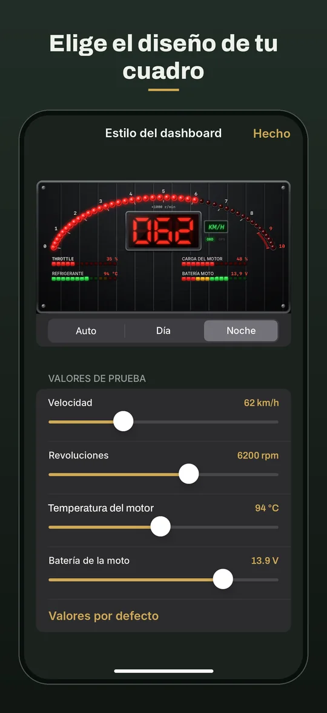
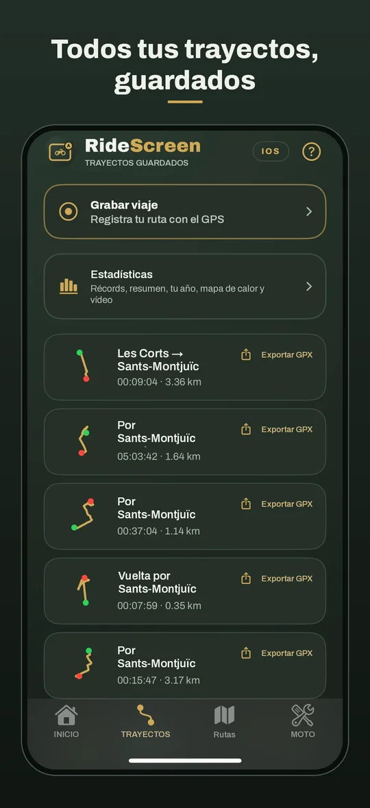
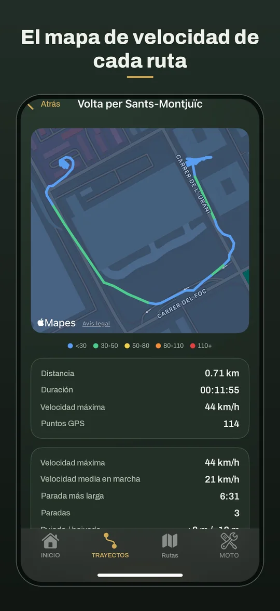
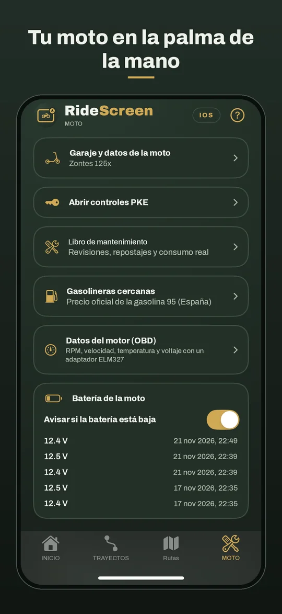

RideScreenRideScreen para iPhone dibuja el mapa, la navegación, la velocidad y los datos del motor en la pantalla de tu moto, y sigue haciéndolo con el móvil en el bolsillo. Diseños a tu gusto, viajes con récords, llave sin contacto y mucho más.
Gratis para empezar · desbloqueo completo con un único pago, sin suscripción · sin anuncios





Dibuja el mapa de Apple, tu posición, el destino y la próxima maniobra, y sigue enviándolo al cuadro con el iPhone en el bolsillo.
Mapa, limpio, LED, analógico, VFD, minimal, cockpit, Pit, Classic y Focus, en día, noche o automático, con márgenes ajustables.
Pon una foto tuya detrás de los datos, con el velo que prefieras, y ve el resultado antes de salir.
Graba tus rutas con el GPS, con mapa de calor, récords, trofeos y resúmenes de la semana y del año.
Planifica una ruta, importa o exporta GPX y recibe avisos por voz y de semáforos.
Con un adaptador ELM327 por Bluetooth o Wi‑Fi: revoluciones, temperatura y voltaje en el cuadro.
Bloquea, desbloquea y abre el asiento y el depósito desde el móvil. Escanea el QR de información de la moto para configurarlo.
Un clip tuyo con la ruta, la velocidad y la hora encima, en varios estilos.
Controla la moto desde la pantalla de inicio o con la voz, y recibe avisos de mantenimiento, batería y caídas.
Necesitas una moto con cuadro TFT que muestre un código QR para conectar el móvil (MotoPlay / EasyConnect). La app se prueba a diario en una Zontes 125X y ya ha funcionado con otros cuadros, como el JCDZ34. Si el tuyo muestra ese QR, pruébala: la app te dice si es compatible.
| RideScreen AA (Android) | RideScreen (iPhone) | |
|---|---|---|
| Qué hace | Pone Android Auto inalámbrico en el cuadro: Google Maps, Waze, música y el Asistente. | Dibuja su propia imagen en el cuadro: mapa de Apple, navegación y datos de la moto. |
| Otras apps en el cuadro | Sí, las de Android Auto. | No. Solo lo suyo, por limitaciones de iOS. |
| Precio | Gratis, de código abierto. | Gratis, con un desbloqueo único en la App Store. |
¿Tienes Android? RideScreen AA es otra app, gratuita y de código abierto.
Instala RideScreen desde la App Store y abre la app. Acepta los permisos de Bluetooth, red local y cámara.
En Inicio pulsa Más → Emparejar y escanea el QR del cuadro. Únete una vez a su Wi‑Fi.
Pulsa Conectar. La imagen aparece en el cuadro, y la app graba el viaje mientras tanto. Después conecta sola.
En los ajustes del PKE, escanea el QR de información de la moto. Si la caja no responde, añade la contraseña Bluetooth de la app oficial.
La app es gratuita. Con ella puedes emparejar, conectar y ver el cuadro con velocidad y hora. El desbloqueo completo (diseños, mapa, OBD, llave, viajes, rutas, Siri…) es un único pago, sin suscripción, y sirve en todos tus dispositivos con el mismo Apple ID.
No. En iPhone la app solo puede dibujar su propia imagen con el móvil bloqueado, y eso se hace con el mapa de Apple. Puedes pegar un destino de Google Maps y lo navega ella.
Si la caja contesta pero no obedece, escribe en los ajustes del PKE la contraseña Bluetooth de 6 caracteres que pusiste al vincular la moto en la app oficial. Déjala vacía si ya te funciona.
Los viajes y ajustes se quedan en tu iPhone. No hay cuentas ni anuncios. El envío de datos anónimos es opcional y nunca incluye tu ubicación. Todo está en la política de privacidad.
Ajustes → Datos anónimos y problemas → Informar de un problema, o escribe a hola@ridescreen.app contando tu moto y qué ha pasado.